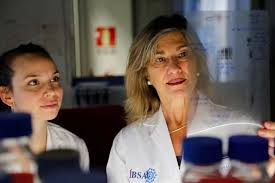

Nació en Salamanca en 1966.
Cursó la licenciatura de Farmacia, confiesa que nunca tuvo vocación de farmacéutica. Sin embargo, la carrera le permitió estudiar asignaturas de Bioquímica y Biología Molecular que le encantaron.
María Ángeles es Investigadora Científica del CSIC y profesora asociada de la USAL. También dirige el grupo Neurobiología Molecular en el IBFG y es Subdirectora Científica de IBSAL.
María Ángeles a lo largo de su carrera profesional como investigadora ha publicado unos 103 artículos y ha participado 8 veces en congresos.

Posee dos títulos de Doctora por la Universidad de Salamanca (USAL):
Ha ocupado importantes cargos de gestión y dirección: